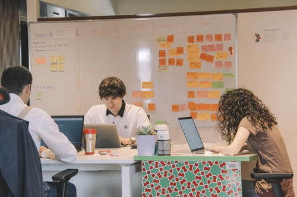

The Growing Importance of using Disciplined Agile

With a fast-changing business environment, there is a high level of focus on disruption and innovation by today’s businesses. Parameters like adaptiveness, responsiveness & constant learning are used to gauge their effectiveness & the growth trajectory that businesses would tread along. Enterprises are forced to bring business agility across all functional areas and not merely in the Operations or Delivery departments. It becomes imperative for leaders to set up agile environments across all levels & advocate about the value it brings to the businesses as a whole. This holds true for all businesses across industries & there is no single industry that does not demand an agile way of working from their players. Agile methodologies are well-received by almost all businesses by recognizing the need to stay ahead of the competition and to overcome all the challenges that the dynamics of the industry pose. Breaking away from the conventional practices & processes and adapting to the new technologies & working styles have become a new norm for businesses worldwide.
Organizations around the world have already adopted various frameworks that come under agile implementations. By going a step further, they are readily embracing the Disciplined Agile (DA) framework as well, which allows enterprises to customize their agile framework that is best suited to their unique needs & challenges at an organization and project level. Disciplined Agile Delivery (DAD) facilitates enterprises to tune their agile processes and practices to specific needs. Given its goal-driven nature, DAD ensures that the effort put in by all the project teams is concentrated towards achieving business goals. Unlike Scrum, it is a hybrid framework that puts together the best practices from all the existing sources like Kanban, DevOps, Xtreme Programming (XP), Waterfall, Lean, & many more, and based on the given context/scenario, teams are allowed to choose and tailor their way of working.
I would like to outline how the DA toolkit could prove handy and useful at every level:
At an Organization level: Continuous learning becomes an inherent culture for organizations adopting the DA toolkit. Based on the immediate needs, scenarios & organizational strategy, teams keep customizing & evolving their delivery framework in every possible way only to bring continuous improvement (Kaizen) in anything they do. DAD is a context-specific framework that not only imbibes a fail-fast culture but also lets teams succeed early. DAD framework takes care of an entire spectrum of complexities a team might potentially face. There is no one-size-fits-all approach as teams can choose their way of working (WoW) based on the factors like team size, geographical proximity, technical & domain complexity, and compliance. Also, apart from the delivery department, the DA toolkit’s flexibility covers other teams like the sales & marketing team, procurement team, etc. This ensures the right coherence among various teams only to achieve the right business goals. Governance becomes super-easy and lightweight by using such a dynamic and flexible framework which only makes the role of PMO & other mid-level managers a lot easier. The principle of business agility can be easily achieved through this framework.
At a Team level: Typically, there are a lot of issues that teams face with respect to process improvements & workflows owing to the lack of end-to-end visibility. DA toolkit keeps an entire organization into consideration which guides teams in optimizing workflow in a way that increases its effectiveness. Besides collaboration strategies, it also factors in the technical aspects like design, architecture, development, testing only to bring an overall coherence. From a typical software delivery mindset, it transitions the team to bringing clients value by solution delivery. It basically addresses the full delivery lifecycle. DAD is Goal-based and not a prescriptive like Scrum. DA toolkit gives a plethora of practices/strategies for the team to choose from based on their set goals like: Accelerate Value delivery, Changing Stakeholder needs, etc. At the same time, there are governance strategies build around to ensure there is enterprise-level awareness among the teams. This leads to them focusing on delivering real value to their customers.
At an Individual level: While Scrum brought a significant transition on the way you deal with projects in the waterfall model, the DA toolkit brings more fluidity in your thought process while tailoring your delivery lifecycle with an intention to deliver the solution to the client. Given its agnostic & pragmatic nature, the DA toolkit allows you to experiment with and discover new ways of working based on the scenario or challenge you’re being faced with. By having a larger picture and tinkering with various such variables of the process, you evolve yourself professionally at a much better pace than a typical agile practitioner. This becomes a starting point for you to get a hold of aligning business goals with project deliveries. Instead of learning & applying a single scrum framework, you get to learn various methods in a hybrid way, only to improve your understanding & knowledge on various other aspects, besides the delivery model. Given your unique skillset & experience, i.e., your unique context, you will have various choices that the DA toolkit provides that works for you. As you develop a solid understanding of its applicability and practice it over the years, DA provides an individual, the opportunity to distinguish yourself from other practitioners in the market keeping you at the forefront.
Numerous organizations around the world have realized the importance of DA & have readily embraced it. With this pandemic around, organizations have identified the importance of Business agility much ahead of the curve and the DA toolkit is the foundation for it. Organizations need to invest heavily in aligning their people with an understanding of this new framework and the way it contributes to delivering the business value to the client in the most effective way. This is the only way to keep up the pace with the changing market trends.
Thanks for reading . Please feel free to share your comments and feedback.